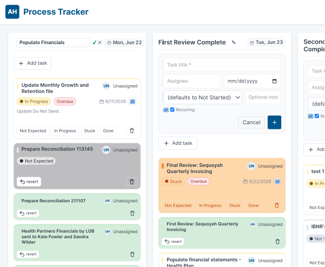

LedgerLine: Financial Close Tracker
2026An industry-sponsored senior capstone and internship: a web app that runs a hospital finance team's monthly close as a board of milestone steps, each anchored to the Nth business day of the month. Computes due dates with business-day and holiday math, rolls recurring tasks forward each month, and tracks every task (Not Started → In Progress → Stuck → Done) with owners, comment threads, audit history, and soft-delete. Built with two teammates, collaborating with the sponsor's cybersecurity team on requirements, with full CI and a test suite.